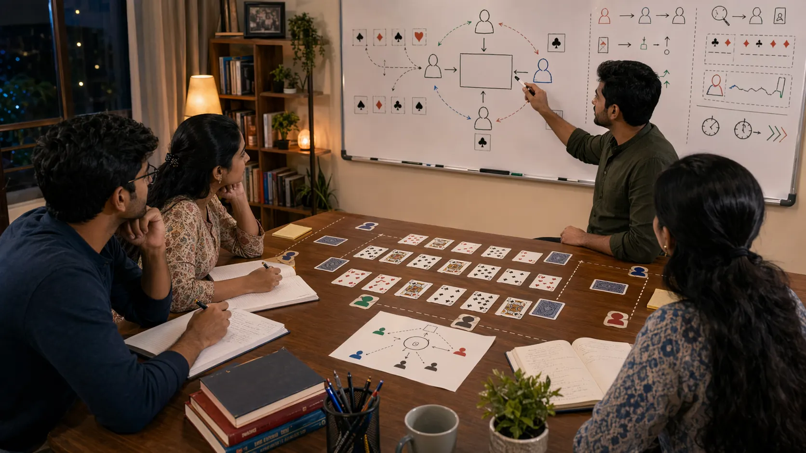
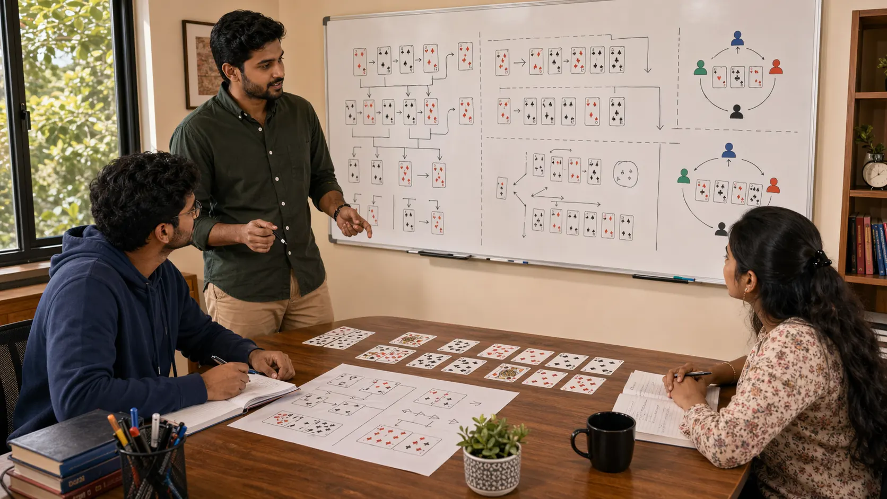
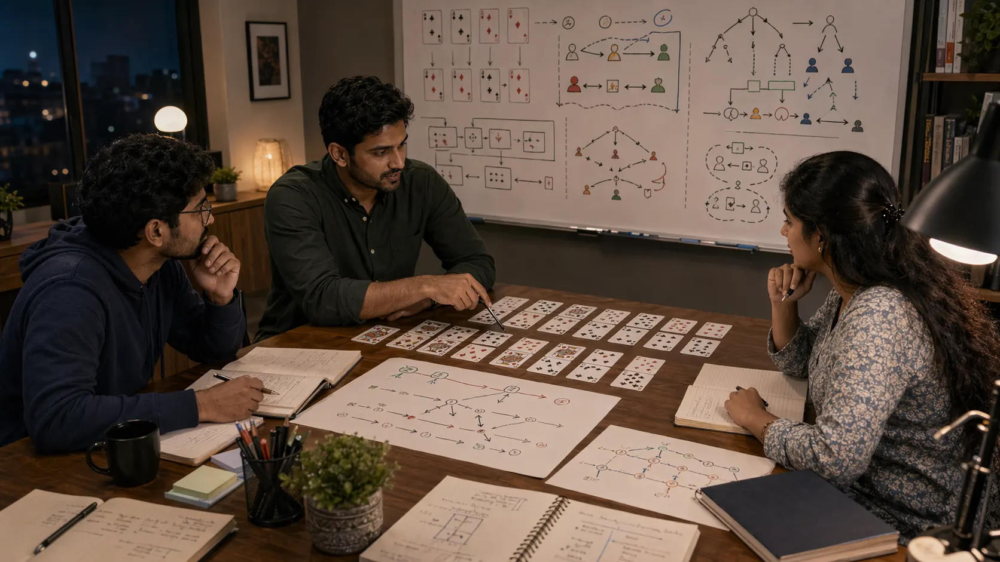

The core learning path inside this repository.
These are the central pages for readers who want to move from basic card-game structure to steadier table awareness and more reliable strategy.

Fundamentals
Start with hand structure, table rhythm, value protection, and the baseline habits that make later strategy easier to trust.
Open fundamentalsDecision Making
Read how to compare options under uncertainty without mistaking urgency for clarity.
Open decision making
Common Mistakes
See the repeated errors that quietly cost value across many card tables and why they are easy to miss in live play.
Open common mistakes
Game Awareness
Learn how to widen the frame beyond your own hand and notice where the table is actually moving.
Open game awareness
Pattern Recognition
Use repeated structures and behavior patterns to improve speed without letting familiarity replace judgment.
Open pattern recognition
Play Styles
Study style through repeated behavior, pressure response, and timing instead of quick labels.
Open play styles
Risk Balance
Compare reward, fragility, timing, and recovery before committing too much to one line.
Open risk balance
Scenarios
Turn real table situations into review notes that help the next similar spot feel less chaotic.
Open scenarios
Strategic Thinking
Move from isolated decisions to broader plans that still stay flexible when the round changes shape.
Open strategic thinking
Advanced Concepts
Use layered information, adaptation, and table image only when they make the next decision clearer.
Open advanced concepts